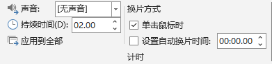

切换
Transition
内容 Contents
切换到此幻灯片
计时
切换到此幻灯片
也叫换片
设置幻灯片的过渡 Transition 效果
可以选择多个幻灯片同时设置
一个 PPT 中不要使用太多种过渡效果
系统提供细微、华丽和动态内容等多种过渡效果
细微
平滑 Morph
可以实现图形、数字、文字之间的丝滑过渡
简单设计即可呈现惊艳效果
华丽
页面卷曲 Page Curl
翻页效果
动态内容
计时
持续时长 Duration
持续持续的时间，单位秒
换片方式
1. 单击换片；默认过渡方式
2. 自动换片：按照设置时间自动过渡；每个幻灯片都可单独设置自己的换过渡时间；更多精细调整，可以通过"放映" → "排练计时"设置幻灯片的过渡

计时
练习 Drill
倒计时
在首页插入3张幻灯片
分别输入数值3、2、1，幻灯片水平垂直居中
指定3张幻灯片的过渡效果为平滑，自动播放 - 1秒
相册
增加一个板块为相册
插入诺干张幻灯片
为各幻灯片插入图片或使用背景
添加其它必要的元素，如日期、标题和说明等
为各相册幻灯片指定页面卷曲过渡效果，自动换片 - 2秒
其它过渡设计
为其它幻灯片指定过渡